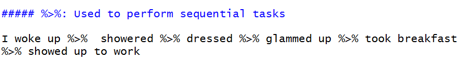
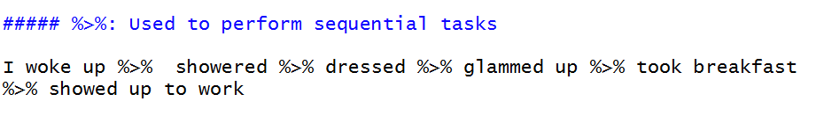

top100 <-
read_csv("https://github.com/utdata/rwdir/blob/main/data-raw/hot100_assignment.csv?raw=true")15 Getting and saving data
In this chapter
But before we start:

15.1 The data frame
A data frame is an R object1 and can be used and re-used like any other. The difference is that it contains columns and rows, just like a spreadsheet. These follow the rules we’ve seen about good, tidy Excel files:
- Each column contains one kind of information – race, sex, address, etc. Data scientists call these “fields” or “variables” or “attributes”.
- Each row contains one example of each of those columns, all at the same unit of analysis. In other words, they each refer to the same noun. Data scientists call these “observations” or “cases” or “records”.
Before you can use a data frame, you will have to import some data from a file on your hard drive or the web, or load some data that is saved in one of several R-specific formats. Your data will often arrive in the form of a comma-separated text file (.csv), or in an Excel format (.xlsx)2. As you work on it, you’ll save it as an R data file that you’ve checked for mistakes and proper treatment of columns.
15.1.1 Example data
Christian McDonald, a data journalism professor at the University of Texas, has compiled a list of Billboard’s Hot 100 hits back to the 1950s, and made it available in his Github account. We’ll be using the data on McDonald’s Github repository at https://github.com/utdata/rwdir/blob/main/data-raw/hot100_assignment.csv?raw=true
Here is how he describes it:
The Billboard Hot 100 singles chart has been the music industry’s standard record chart since its inception on 8/2/1958. The rankings, published by Billboard Media, are currently based on sales (physical and digital), radio play, and online streaming. The methods and policies of the chart have changed over time.
The data we will use here is a combination of data collected by Kaggle user Dhruvil Dave, along with some scraping and merging by Prof. McDonald. It is stored on the code sharing website Github for safe keeping.
The data dictionary
Here is a data dictionary , sometimes called a record layout to go along with the data. You should look for, or create, something like this for every data source you use.
| variable name | type | description |
|---|---|---|
| CHART WEEK | date | The release date of the chart |
| THIS WEEK | number | The rank (1 through 100) of the song that week |
| TITLE | character | Song title |
| PERFORMER | character | Performer, as published in the chart. There could be different spellings over time. |
| LAST WEEK | number | Last week’s ranking |
| PEAK POS. | number | Highest ranking ever on the Top 100 chart |
| WKS ON CHART | number | Number of weeks it has appeared on the chart, not necessarily consecutive. |
It’s a good example for us, since there are no nuances to the data, and it contains a mix of words, numbers and dates. You won’t have to spend a lot of time studying it to understand what it is.
Warning
Notice the upper-casing, the spaces and the period in the column names. R is a case-sensitive language, meaning a “T” is an entirely different character than a “t”. Column names with spaces and special characters must be treated differently than those with just letters, underscores and periods.
15.2 Starting a new Quarto program
Open the R project created in the last lesson called “rlessons-01”.
Create a new Quarto document. If you want, copy and paste the top section from the last lesson and replace the default options with that.
Delete the boilerplate below the front matter (after the three dashes)
Copy and paste this first code chunk into your document and press the “Play” button to run the code.
Run the code chunk by pressing the Play button
Save your document as
top100-01.qmd. I’m using the “01” suffix so that when I come back to this six months down the road, I know that this program has to be run first!
This assumes you have installed the packages in the previous chapters. Go back and do that now if you skipped it. That step has to be done only once on each computer you use.
```{r}
#| label: setup
library(tidyverse)
library(janitor)
library(lubridate)
```(The #| part of the code chunk is an instruction for this code chunk. This one provides a name for it. You’ll see others later on.)
The library function invokes the packages that you installed earlier. They’re not available to your program by default. That’s because everyone uses a different set of them for different jobs, and they don’t want to gunk up your enviornment with a lot of things you’ll never use.
Although they only need to be installed one time on your computer, packages must be invoked using the library function in every document. Almost every program you write will begin with these same lines, though you’ll often see additional packages added.
Caution
Here’s what your page might look like (probably with different colors) if you are in Visual mode:

Don’t worry about all of the messages that came out after you ran the first chunk – they simply show you some information about what is in the libraries you just loaded. They might even be red!
Tip
There are ways to control what gets printed out by using other options at the top of the code chunk. The full list is on the Quarto website — you can set the default in the top metadata, or do them one chunk at a time with additional lines beginning with #| at the top of the code chunk.
15.3 Importing the Hot 100 data file
The Hot 100 data is stored in a “comma-separated” text file, with the extension .csv. When you import that file, R will guess what each column is – text (words, “character” variables), numbers (“double” precision or “integer”), and date or date/time (“date” or “POSIX” in R).
Data frames are most easily managed by keeping a few style rules in mind:
- Column names should be all lower-case, and have no special characters or spaces in them. They may not start with a number. Separate words in a column name with an underscore, not a space, and avoid any punctuation.
- Any column containing numerals that you don’t plan to use in a math computation should be stored as a character type, not a number.4
We often have to tweak the data import to make sure of these things, or have to convert data types once they ’ve been imported. If you then save your data as an R data frame, you never have to do that again. The read_csv function has a lot of optional arguments – or specifications – that can help overcome problems in the underlying dataset, but it often guesses quite well on its own.
(From now on, you’ll just see the R code that goes inside a code chunk you create, not the part with the backticks and brackets.)
Create a new code chunk to read the top 100 dataset and copy the following line into the body of the chunk:
Here’s what that code does:
- Creates a new object called
top100, to pour the data into. - Uses a function of the tidyverse5 called
read_csv, to - Access comma-separated text data held in McDonald’s github repository.
When you run the chunk by pressing the green arrow within the code chunk, or press Shift-CMD-Enter , the output should say this:
Rows: 336100 Columns: 7
── Column specification ────────────────────────────────────────────────────────
Delimiter: ","
chr (3): CHART WEEK, TITLE, PERFORMER
dbl (4): THIS WEEK, LAST WEEK, PEAK POS., WKS ON CHART
ℹ Use `spec()` to retrieve the full column specification for this data.
ℹ Specify the column types or set `show_col_types = FALSE` to quiet this message.So R found:
- 330,800 rows (or records, or observations).
- 7 columns ,
- 3 of which it thinks are character types, and 4 that it thinks should be numbers.
- It named the columns using the first row of the file.
Stop a minute and think about what you just did in one second – you imported a dataset with MORE THAN a quarter of a MILLION rows without any complaint! You could. never get Excel or Google sheets to be so complacent about this middling size database.
The message also tells you how to get more information.6
There is now a new object in your Enviornment tab, under “Data”, called top100, with 330,800 obs. of 7 variables.
15.3.1 Some details
Note
If you want to import an Excel file, you have to use a slightly different library. You will have to load the readxl library in the setup chunk, then use the read_excel() function to access the data. It works similarly, but it’s a slightly different method.
Default to character columns**
If you’re not sure about the data types of each column, use an option to import them all as text, or character, columns. Then you can fix them one by one. Text will (almost) never be a problem. The option looks like this:
read_csv( "your file name or URL", col_types=c(.default="c") )
Naming your code chunks
Best practice in R is to provide a label for each code chunk, as we did with the setup chunk. It allows you to refer to it later on, provides a better method for errors to be located, and allows quicker navigation. Do that by adding a line at the top of the code chunk like this: #| label: your-label Don’t use special characters or spaces in the label.
15.4 Look at the data you imported
There are several ways to examine the data you just imported.
15.4.1 Check it in the environment tab
There’s now an object listed in your Environment tab with a blue arrow. Expand it, and you’ll see the column names and what types it found.

15.4.2 Click on it to scroll, filter and sort
An easy way to get a little preview of your data is to view it like a spreadsheet. Just remember that any filters or sorts that you do here won’t last – they’re just on while you’re glancing at the data. But this is useful just to get a little preview of what columns look like and to search for things you know should be there. For instance, if I wanted to see whether Taylor Swift was named something else, I might search here. This search is NOT case-sensitive, which is helpful when you want to get a handle on what’s in your data.
To browse the data, click on its name in the environment panel.

15.4.3 Use functions to examine the rows and columns
But these methods are no better (and really a little worse) than just viewing your data and clicking around in Excel or Google sheets. To share your view of the data and describe it to others, you must use R code.
There are a few standard ways to get a quick view of what’s in your data using functions. First, you can look at the top and bottom of it using the head() and tail() functions:
# use head() to show the first six rows
head(top100)
# use tail() to show the last six rows.
#change the number of rows as an an optional argument,
# obtained by searching "Help" for the function "tail"
tail(top100, n=10)Use the little arrow at the top right of the listing to look at columns that don’t fit on the page.
Note
This is where Visual Mode can become tiresome – often, your output is so smushed that it is unreadable. Switch to Source mode and you’ll be able to see more.
Or, you can look at a list of columns along with their types and a few examples from the top of the file using the glimpse() function, in this case listing the name of the data frame you want it to look at within the parentheses.
glimpse(top100)Rows: 336,100
Columns: 7
$ `CHART WEEK` <chr> "1/1/2022", "1/1/2022", "1/1/2022", "1/1/2022", "1/1/20…
$ `THIS WEEK` <dbl> 1, 2, 3, 4, 5, 6, 7, 8, 9, 10, 11, 12, 13, 14, 15, 16, …
$ TITLE <chr> "All I Want For Christmas Is You", "Rockin' Around The …
$ PERFORMER <chr> "Mariah Carey", "Brenda Lee", "Bobby Helms", "Burl Ives…
$ `LAST WEEK` <dbl> 1, 2, 4, 5, 3, 7, 9, 11, 6, 13, 15, 17, 18, 0, 8, 25, 1…
$ `PEAK POS.` <dbl> 1, 2, 3, 4, 1, 5, 7, 6, 1, 10, 11, 8, 12, 14, 7, 16, 12…
$ `WKS ON CHART` <dbl> 50, 44, 41, 25, 11, 26, 24, 19, 24, 15, 31, 18, 14, 1, …Here, you might notice that the names of some of the columns have back-ticks around them. That’s because they don’t follow our rules for column names – they should be lower case, with no spaces or special characters.
15.5 Introducing the pipe
You’ll be seeing a lot of R code that has this format:
data_set_name |>
verb ( nouns ) |>
verb ( nouns ) |>
etc...That little symbol, |> is called the “pipe”. It means “Take what is on this line, and use it to do the next thing” It matches the way you think about algorithms from the programming appendix in this book. You can use the shortcut keys CTL/CMD-SHift-M instead of typing it out. (If yours comes out as %>% instead of |> as shown in this Tweet, don’t worry about it. There are technical differences, but for now they’ll do the same thing. )
 

We’re going to use two of the other libraries that we loaded at the top — lubridate and janitor — to fix the two problems with this data, while showing you what the pipe does.
Add a code chunk that you’ll edit to clean the column names and fix the dates the data.
Using a pipe can help make your code easier to read and write by separating each step into its own command. For example, glimpse(top100) does the same thing as top100 |> glimpse(). The second version tells R, “Start with the top100 data frame and then glimpse it. Using small-ish datasets like this, I try to separate as much as is reasonable into steps because I can then troubleshoot problems one line at a time.
Warning
Don’t confuse the pipe (|>) with the assignment operator (<-). The pipe says, “keep going”. The assignment operator says, “save this for later” .
top100 |>
clean_names() |>
glimpse()Rows: 336,100
Columns: 7
$ chart_week <chr> "1/1/2022", "1/1/2022", "1/1/2022", "1/1/2022", "1/1/2022…
$ this_week <dbl> 1, 2, 3, 4, 5, 6, 7, 8, 9, 10, 11, 12, 13, 14, 15, 16, 17…
$ title <chr> "All I Want For Christmas Is You", "Rockin' Around The Ch…
$ performer <chr> "Mariah Carey", "Brenda Lee", "Bobby Helms", "Burl Ives",…
$ last_week <dbl> 1, 2, 4, 5, 3, 7, 9, 11, 6, 13, 15, 17, 18, 0, 8, 25, 19,…
$ peak_pos <dbl> 1, 2, 3, 4, 1, 5, 7, 6, 1, 10, 11, 8, 12, 14, 7, 16, 12, …
$ wks_on_chart <dbl> 50, 44, 41, 25, 11, 26, 24, 19, 24, 15, 31, 18, 14, 1, 49…This shows us that the function clean_names() converts the column names into our preferred style. Notice that we didn’t pour that answer into a new object — there is no assignment operator <- – so it just prints the answer to the screen.
Once this works as expected, we can finish cleaning up the data.
Caution
Don’t try to save the output of something you “glimpse” into a new object – it won’t be the data itself, just the thing that got printed out!
15.5.1 Introducing verbs of the tidyverse
This process uses the pipe to tack on new statements after each one is complete, and introduces the verbs of the tidyverse, which you’ll see in action in the next chapter.
These are two of the most important verbs you’ll use:
-
select, which picks and rearranges columns (kind of like filtering vertically) -
mutate, which lets you create new columns out of old ones. (like inserting a column in Excel and entering a formula)
The code chunk also uses function called mdy(), which stands for “month-day-year”, which in turn tells R that the character chart_week column starts out in that format, as opposed to year-month-day or something else.7
Your final code chunk should look like this. Try to avoid copying and pasting, and instead build it one step at a time, running the chunk each time you add a phrase.
(I usually add the object name at the top last to save the data result for later use, after I’m sure everything has worked by printing it to the screen.)
top100_clean <-
top100 |>
clean_names () |>
mutate ( chart_date = mdy(chart_week)) |>
select ( chart_date, title, performer, this_week, last_week,
wks_on_chart, peak_pos)15.6 Check your work and save
Now check your data by “glimpsing” it:
top100_clean |>
glimpse()Rows: 336,100
Columns: 7
$ chart_date <date> 2022-01-01, 2022-01-01, 2022-01-01, 2022-01-01, 2022-01-…
$ title <chr> "All I Want For Christmas Is You", "Rockin' Around The Ch…
$ performer <chr> "Mariah Carey", "Brenda Lee", "Bobby Helms", "Burl Ives",…
$ this_week <dbl> 1, 2, 3, 4, 5, 6, 7, 8, 9, 10, 11, 12, 13, 14, 15, 16, 17…
$ last_week <dbl> 1, 2, 4, 5, 3, 7, 9, 11, 6, 13, 15, 17, 18, 0, 8, 25, 19,…
$ wks_on_chart <dbl> 50, 44, 41, 25, 11, 26, 24, 19, 24, 15, 31, 18, 14, 1, 49…
$ peak_pos <dbl> 1, 2, 3, 4, 1, 5, 7, 6, 1, 10, 11, 8, 12, 14, 7, 16, 12, …Note the new data type for the chart_date, and the order of the columns along with the clean names.
Now save your data as an R data file (called an “RDS” file) like this:
saveRDS(top100_clean, file="hit100.RDS")15.7 What we did
- Created a new Quarto document and added the packages (libraries) we plan to use.
- Imported a comma-separated text file from the web into a data frame object called
top100. - Took a look at it in several different ways.
- Created a second data frame from the first, with names and dates fixed, with only some columns picked out and displayed in a new order.
- Saved it into the project for use in another program.
What you should do next
If you’ve followed along, you should create text surrounding your code chunks that result in a clean, readable document that is easy to navigate, has full sentences fully describing your work, and makes sense from top to bottom when rendered.
- Documentation of the source of your file.
- Sub-headings for each of the steps
- Introductory text describing what you are about to do
- Maybe: Some text after the chunks that describe meaningful output or things you notice about the result.
If you’re stuck, you can use the template I created as a starting point.
Render it early and often to make sure your program isn’t broken and that the output looks the way you expect.
And breathe
You’ve now created a full, working R program in Quarto format that can serve as a model for everything you do in the future. Congratulate yourself and take a break!

15.8 Postscript: Understanding file types
So far in this book, you’ve been saved from having to understand the format of data as it is traded among people and computers. Now you’ll have to start understanding that there are different forms of data files, one of which is the simple Excel file that we’ve dealt with so far.
But Excel is a propriety format – it’s made by Microsoft and isn’t very easy to use without a program that can import it. As we’ve seen, it can also corrupt data by misunderstanding data types like dates and numbers, and there isn’t much control over its assumptions.
This section will go over the common data formats you’re likey to run across in your work with R. However, R is not limited to these. You’ll often find arcane and specialized data file formats if you work with statisticians or experts in geographic analysis that can also be read in R. There is almost always a package available that will import it.
Tabular text data
In Excel and Google Sheets, each page of a workbook is tabular, meaning it is approximately a rectangle. It might be a narrow and tall rectangle, or a short and wide rectangle, but it’s still a rectangle. Each column is an attribute or a variable, and each row is an observation or a record .
Every computer can read and write plain text. Those are the characters you can type on a typewriter, with no fancy formatting or other features that require special software to ingest it. We’ll normally be dealing with these. They usually come in two flavors:
CSV data is “comma-separated values” data, which means that a new column will be created whenver a comma is encountered. If there is a chance that there might be a comma inside a column, it will be enclosed by quote marks. This usually works OK, but there are some times when you have to be careful because there could be commas AND quotes inside a column. (A good example is a column of peoples’ names – they may be something like
Smith, Johnny "The Rat") To overcome this, some people use:TSV , or tab-separated data. In this case, the tab key determines the distinction between columns, which is much rarer to find in plain text files.
Here’s what a CSV might look like listing the last few presidents:
name, position, start_date, age_at_start_date
"Biden, Joe", President, 2021-01-20, 78
"Trump, Donald", President, 2017-01-20, 70
"Obama, Barack", President, 2009-01-20, 47It looks like a mess to you, but it’s a thing of beauty to a computer.
Some government agencies just make up a delimiter instead of a comma or tab - I’ve seen them with vertical bars (|) and tildes ~. You would use the function read_delim() to import a text file delimited by something other than a comma.
Non-tabular text data
Another common format you’ll see passed around from computer to computer is called JSON. This stands for Javascript Object Notation, and is commonly used to pass data over the web , often to your phone or your browser.
It looks even worse, but it’s also a thing of beauty to a computer. The same data would look like this in JSON:
{"presidents": [
{"name": "Biden, Joe", "position": "President", "start_date": "2021-01-20",
"age_at start_date": "78"},
{"name": "Trump, Donald", "position": "President", "start_date": "2017-01-20",
"age_at start_date": "70"},
{"name": "Obama, Barack", "position": "President", "start_date": "2009-01-20",
"age_at start_date": "47"}
]
}
15.8.1 Evil data - PDF
We’ll look at this later, but just know that data supplied in a PDF file isn’t data at all – it’s effectively pixels placed on a page, and is intended for printing and viewing, not analyzing. Government agencies often print Excel files into PDF’s – I have no idea why, but it’s common, and it’s often difficult to convince them to do anything else regardless of the local public records law. For now, just remember that this is one file format you want to avoid if at all possible – it’s the most error-prone and difficult data to manage, even if it looks pretty.
15.8.2 Proprietary data formats
Excel is one proprietary data format; Google Sheets is another. You may run into many different kinds, ranging from maps to statistical systems like SAS. R has a package that will read almost any of these – once you find it, it shouldn’t be a problem.
The more common packages you may need to read them are readxl , which is part of the tidyverse, and googlesheets4.
An object in R is just a name of something. We’ll try to distinguish it from a column in a dataset, which statisticans call “variables”. But the terms are sometimes used interchangeably.↩︎
See the postcript on file formats↩︎
Well, sort of. You can also invoke packages in a program by fully specifying its name, with the package name followed by two colons and the function, like this:
readr::read_csv(). You’ll often see that in examples – it’s deliberately done to show you which package the function is coming from.↩︎More advanced users create a special type of variable called a
factorto work with categories - we’re skipping that for now.↩︎Actually, a package within the tidyverse called
readr↩︎Sometimes, this will say “Use
problems()…”, meaning that something could have gone wrong and you should check it. We’ll see how to fix the column types at the same time as your import later on in the course.↩︎This function is part of the library called
lubridatethat we also loaded in the setup chunk.↩︎